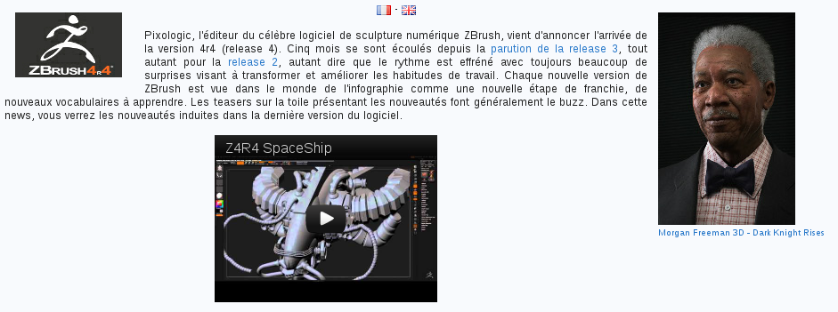
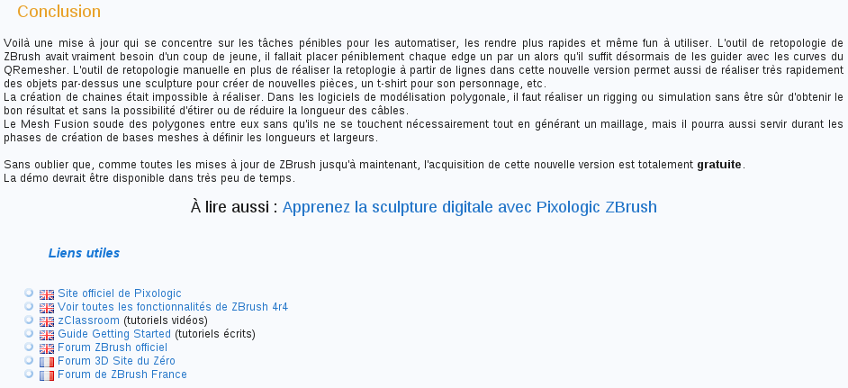

Si vous êtes ici, c'est probablement que la rédaction d'une news vous intéresse. Ce tutoriel a pour but de vous informer et de vous donner des conseils pour être en mesure de rédiger correctement une news sur le SdZ. Prenez soin de le lire afin de savoir comment écrire une news qui répond aux critères de publication du Site du Zéro, vous mettrez ainsi toutes les chances de votre côté pour que votre news soit acceptée !
Je vous conseille d'ailleurs de finir la lecture du tutoriel au moins une fois avant de vous lancer dans la rédaction. ;)
Le choix du sujet est très important, bien évidemment. Par contre, certains peuvent croire à tort que celui-ci est facile à faire. Choisir un sujet de news, cela peut être très difficile. En effet, le sujet doit répondre à plusieurs critères :
Premièrement, celui-ci doit vous intéresser ! Si le sujet ne vous dit rien, vous n'aurez pas de plaisir à rédiger et votre news ne s'écrira pas bien et rapidement. Assurez-vous donc d'avoir un certain intérêt pour le sujet sur lequel porte votre news.
Le sujet doit être intéressant ! Si le sujet est trop banal, celui-ci n'intéressera pas les zéros. Quel est l'intérêt d'écrire une news si on doute fortement de l'intérêt et de la pertinence de celle-ci ?
Votre sujet ne doit pas porter sur un sujet illégal, ou même border-line. Assurez-vous donc de la légalité de votre sujet. Vous pouvez, par exemple, parler d'une technique de piratage sans pour autant expliquer en détail comment la reproduire.
Les publicités sont interdites : toute forme de publicité est interdite sur le Site du Zéro. Ainsi, assurez-vous que votre news ne soit pas une publicité pour un produit ou un service, encore plus si vous en êtes créateur !
Si votre sujet de news respecte les contraintes ci-dessus, lancez-vous ! Votre sujet semble très bien. Si vous avez un quelconque doute, n'hésitez-pas à contacter un newser par messagerie privée, celui-ci se fera un plaisir de vous aider.
Par ailleurs, quand vous proposez une news, il faut indiquer une catégorie pour celle-ci. Les différentes catégories disponibles sur le site à l'heure actuelle sont les suivantes (nous allons d'ailleurs les préciser un peu, pour qu'il n'y ait pas de confusion). À noter que certaines catégories ne sont pas destinées aux membres, elles ne seront donc pas détaillées ici.
Hardware : ce que l'on qualifie de Hardware, ce sont les gadgets et le matériel électronique et informatique ;
Logiciel : je pense qu'ici la catégorie est claire, on y retrouve les news concernant un logiciel ;
Programmation : c'est ici qu'il faudra mettre vos news parlant des langages de programmation, de leurs évolutions, nouveautés… ;
Web : comme la catégorie "Logiciels", pas de problème de compréhension : ici, on retrouve toutes les news touchant au Web ;
Concours : vous désirez parler d'un concours de programmation ou de tout autre sujet touchant à l'informatique ou aux sciences ? Utilisez cette catégorie ! ;
Sécurité : tout ce qui concerne la sécurité informatique ;
Téléphonie mobile : un nouveau portable révolutionnaire ? La 4G ? Tous ces sujets sont abordés dans cette catégorie ;
Libre : tout ce qui touche au monde des logiciels libres, par exemple GNU/Linux ;
Robotique : tout ce qui concerne la robotique ;
Autres : on mettra ici toutes les news qui n'iront pas dans les catégories citées ci-dessus.
Si vous rédigez une news sur le Site du Zéro sciences, voici les différentes catégories disponibles :
Concours : même chose que côté informatique, mais concernant les sciences, bien évidemment !
Évènements : tout ce qui est relatif à des évènements dans le monde scientifique.
Mathématiques et Logique
Physique - Chimie
Astronomie
Biologie
Santé : la médecine entre également dans cette catégorie.
Géologie
Écologie
Robotique : si le sujet est à la fois scientifiques et informatique, choisissez la catégorie adéquate ! Si le sujet est trop lié aux deux thèmes, rédigez votre news sur votre partie du site favorite !
Prenez garde de choisir une catégorie adéquate pour votre news !
Passons à une étape importante, sans aucun doute la plus grosse. L'organisation et la rédaction de votre news. Cette partie du tutoriel sera divisée en plusieurs sous-parties, pour rester clair et cohérent tout au long de la démarche.
Voici comment cela va se présenter :
un titre pour ma news ;
un plan correct ;
un exemple très détaillé.
Les titres sont plus ou moins précis. Nous allons approfondir ces différentes sous-parties dans la suite du tutoriel.
Un titre pour ma news
Le titre que vous allez donner à votre news doit être précis et doit s'accorder avec le contenu de votre news. C'est le titre qui va donner un avant-goût aux lecteurs. Il doit les renseigner sur le sujet de votre news et peut donner un ton à celle-ci suivant la manière dont il est formulé. Lorsque votre news paraîtra sur la page d'accueil, une des premières choses que les membres remarqueront est votre titre. Il doit donc être choisi pertinemment. N'hésitez pas à donner un titre qui a du punch, qui attire les lecteurs en attisant leur curiosité, vous n'en attirerez que plus de lecteurs !
Le titre peut être un élément difficile à choisir. Vous pouvez très bien le mettre après avoir rédigé votre news si l'inspiration ne vous vient pas tout de suite. Peut-être aurez-vous plus d'idées après rédaction ? :)
De toute façon, n'ayez pas peur de l'oublier, si vous ne remplissez pas le champ "titre", vous ne pourrez pas proposer votre news. Si vous souhaitez tout de même envoyer votre news pour que d'autres membres participent à la rédaction, vous pouvez mettre un titre temporaire !
Quelques exemples
Si vous rédigez une news sur la sortie d'un système d'exploitation, vous devez citer son nom, ainsi que sa version.
Voici par exemple un titre incorrect : Sortie d'une nouvelle version
Puis un exemple de bon titre : Sortie d'Ubuntu 12.04 (Precise Pangolin)
Le premier titre est peu explicite. On comprend très mal sur quoi va porter la news. Le deuxième quant à lui est précis et fluide, on sait exactement sur quoi elle va porter. :)
Comme votre news doit donner l'envie d'être lue, essayez de donner un titre qui attirera les membres :
Selon vous, lequel de ces deux titres donne le plus envie de lire la news ? Le deuxième est beaucoup plus attirant, non ? Les titres mis en exemple sont à but indicatif, essayez de jouer sur votre originalité. ^^
Un plan correct
Votre news doit comporter un plan cohérent. Il faut avoir une certaine démarche, les choses dont vous allez parler doivent être abordées dans un ordre précis pour que vous restiez clair et organisé dans ce que vous dites.
Une Introduction
Généralement, on inclut avant de s'attaquer à la rédaction des différentes parties une courte introduction sur le sujet que l'on va traiter. C'est elle qui va renseigner le lecteur, après le titre, sur le thème de la news. L'introduction devra apporter un peu plus de détails que le titre. Elle doit mettre l'eau à la bouche et donner envie de poursuivre la lecture. Vous pouvez, en guise d'introduction, parler d'un problème que le contenu de votre news règle, ou n'importe quoi selon vos envies ! Vous pouvez également annoncer le plan du contenu. Bref, le tout doit être attractif. :)
Le Contenu
C'est le "principal". C'est ici que va être développé tout le sujet, dans les moindres détails. Le contenu ne doit pas être d'un seul tenant, il faut le séparer de façon cohérente en parties plus ou moins longues selon ce que vous avez à dire. Cela permettra au lecteur de s'y retrouver plus facilement et lui permettra de ne pas se sentir perdu et englouti sous une tonne d'informations balancées sans aération dans le texte.
Organiser le contenu en le séparant et en le classant permet également d'être clair dans ce qu'on dit, sans en dire trop d'un coup. Cela étale l'information de façon continue. On apprend de cette manière des choses du début à la fin de la lecture.
Le diviser en trois ou quatre parties est l'idéal. Ne pas faire dix parties ou au contraire qu'une seule…
Une Conclusion
La conclusion est plus qu'optionnelle. Celle-ci permet de mettre un mot de fin à la news. C'est souvent ce qu'en retiendra le lecteur. La conclusion n'a pas besoin de faire dix lignes. Dans la conclusion, vous pouvez soit faire un bref résumé de ce qui a été dit précédemment, soit parler de l'avenir de ce que vous venez de présenter, de ce qu'ils prévoient pour le futur. Le dernier type de conclusion laisse envisager une autre news sur le sujet, étant donné que des choses sont prévues dans l'avenir. :ange:
Autres
Voici quelques points importants qui n'ont pas été abordés plus haut.
Essayez d'être exhaustif : les news du Site du Zéro ont tendances à être publiées un peu plus tard que sur les autres sites d'actualités informatique, mais nos news sont reconnues pour être très complètes. En effet, nous aimons ajouter une plus-value à nos news. Essayez donc d'ajouter une couche d'informations pertinentes à votre news. Par exemple, vous présentez une news sur la nouvelle version du navigateur Firefox ? Pourquoi ne pas parler de l'entreprise derrière, des buts recherchés par celle-ci avec cette nouvelle version, du futur de Firefox, bref, innovez ! Pourquoi se contenter de présenter la nouvelle version alors qu'on peut en dire tellement plus ?!
Les news doivent être pédagogiques : en lien avec ce que j'ai dit plus haut, nous aimons également publier des news pédagogique, c'est-à-dire qui apprennent des choses aux lecteurs. En effet, nous sommes sur le Site du Zéro, un site d'apprentissage et de partage des connaissances ! Essayez donc d'introduire des notions intéressantes sur des choses liées à l'informatique dans votre news. Si le sujet est trop pointu, ne vous attardez pas trop dessus. Contentez-vous d'introduire le sujet en quelques phrases et redirigez les lecteurs vers une source externe à la news s'ils veulent en savoir plus. Néanmoins, il est toujours intéressant pour les membres et pour vous-même de vous attarder sur ce-dit sujet pointu : en effet, vous pourrez en faire découvrir un peu plus aux membres avides de savoir, tout en apprenant un peu plus vous-même ! Le choix de rentrer dans les détails ou non vous revient donc !
Des liens sur le sujet : on voit ceci très souvent à la fin des news, juste après la conclusion : une liste de liens relatifs au sujet. Ça permet au lecteur d'étendre ses connaissances sur le thème abordé dans la news s'il veut en savoir plus. On retrouve dans ces liens : des sites traitant du même thème (qui peuvent être un complément à votre news), un lien vers le site officiel de ce dont vous parlez (s'il en existe un bien sûr), des liens vers une encyclopédie ou autre, pour aborder différemment le sujet général et en connaître un peu plus sur tout ce qui est "histoire", des liens vers Wikipédia par exemple peuvent agrémenter la fin d'une news si le sujet s'y prête. Évitez les liens vers d'autres articles du même sujet sur des sites généralistes. Normalement, ces articles ne feront que répéter différemment ce que vous avez dit dans votre news. Essayez donc de donner des liens pertinents. Encore une fois, cette liste n'est pas exhaustive, mais indicative. ;)
Exemple
L'exemple que nous allons utiliser ici est en réalité une news qui a véritablement été publiée sur le site. Je l'ai choisie car je trouve qu'elle est très proche de la démarche précédemment énoncée. ;)
Vous pouvez retrouver la news utilisée pour l'exemple ici.
Un titre
À la lecture du titre de la news, on doit déjà pouvoir émettre des suppositions sur le contenu de celle-ci et notamment le sujet qui sera sans doute abordé.
Une news parlant d'un logiciel de sculpture 3D
Une nouvelle version de ce logiciel
Ce sont des suppositions que l'on fait ici sur le contenu de la news. On remarque que le thème qui sera sans doute abordé est la sculpture 3D. Après on énonce le nom "ZBrush". C'est sans doute ce sur quoi va porter la news.
Faites-vous une opinion sur le sujet qui (selon vous) sera abordé. Vous verrez par la suite si votre opinion était plus ou moins correcte.
Ce qu'il faut retenir de cet exemple, c'est que le titre a une grande importance. C'est ce que regarde en premier le lecteur. Il doit donner envie au lecteur d'en savoir plus sur le sujet traité et lui donner un minimum d'informations sur ce qui sera abordé par la suite, pour voir si le sujet est susceptible de l'intéresser.
Une Introduction

Ici, on voit l'introduction de la news sur ZBrush. C'est à cet endroit que l'on va en apprendre plus sur le sujet. Ça va être plus précis que le titre seul, mais encore flou sur certaines choses pour garder des informations à divulguer tout au long de la rédaction.
Voici ce que l'on apprend ici, dans l'introduction :
on parlera bien de sculpture 3D, plus particulièrement de ZBrush. On fait une brève présentation de celui-ci et de sa place dans le marché des logiciels de sculpture 3D aujourd'hui ;
ZBrush est un logiciel de sculpture 3D. Était-ce votre opinion par rapport au titre ? Je crois pouvoir affirmer que oui. On voit donc que le titre a bien été choisi.
Avec l'introduction, le lecteur est vraiment conscient du sujet de la news. Il en sait un minimum sur le sujet. L'introduction précise le titre, en ajoute un peu plus sans trop en dire. Votre introduction ne doit pas être plus grande que le corps de votre news non plus !
Le Contenu
Dans notre exemple, le contenu est très long et très détaillé, je ne mettrai donc pas de capture d'écran. Néanmoins, on remarque rapidement que le contenu est bien structuré et séparé en parties logiques. De plus, le tout est aéré avec des images et de la mise en forme. C'est ainsi que vous devez organiser votre news, même si celle-ci est plus courte, le marche à suivre ne change pas ; c'est identique.
Une Conclusion

Ici, la conclusion revient rapidement sur certains points qui ont été évoqués dans la news, en ajoutant quelques informations supplémentaires. Par la suite, nous retrouvons une panoplie de liens utiles pour guider le lecteur vers de nouvelles informations intéressantes. Il y a même un lien vers un tutoriel pour apprendre à utiliser ZBrush !
Cette sous-partie est à présent finie, c'était un gros morceau. Je vous attends pour la suite. ;)
Cette partie est assez courte, car je pense que ce que je vais dire ici va de soi.
Des images
Une news sans image est pratiquement inadmissible. Il faut mettre des images dans votre news. Quelque soit le sujet traité. Les images permettent de mieux comprendre la situation/de quoi vous parlez. Elles sont un gros plus dans une news. Elles permettent d'aérer le texte, de faire souffler le lecteur. Si vous ne mettez pas d'images dans un gros pavé de texte, le lecteur sera vite submergé d'informations et de texte, celui-ci se sentira perdu.
Des idées d'images à inclure dans vos news ; ensuite, tout dépend encore une fois du sujet :
le logo d'une firme dont vous parlez dans la news ;
des captures d'écrans du site/logiciel que vous présentez ;
une image représentative du sujet abordé.
J'entends par image représentative : vous parlez du spam, pourquoi ne pas inclure une image de boîte aux lettres remplie ?
Dans le même sens, ne mettez pas trop d'images non plus ! :D
Conseils au passage
Utilisez les flottants pour disposer vos images à gauche ou à droite dans votre news. Vous pouvez les aligner à gauche comme à droite. Je ne peux que vous conseiller d'utiliser des balises de sémantique, de position… Faites bien attention à l'aspect général de votre news, ça doit être structuré et aéré. Ainsi, une news est toujours plus agréable à lire. De plus, n'abusez-pas de la mise en forme. Évitez au maximum les balises erreur, information et avertissement dans vos news. Également, ne mettez pas trop de couleurs, évitez les changements de grosseur de la police, ne jouez pas trop avec les polices etc. Il y a également des smilies à votre disposition. Vous pouvez en mettre quelques-unes dans votre news, mais en général n'en mettez pas plus de trois ou quatre dans votre news, voire évitez-les complètement.
N'incluez pas d'image de trop grosse taille dans votre news. Pensez aux petites résolutions et aux personnes naviguant avec un bas débit. C'est pour cela que dans vos uploads, vous avez un petit bouton :
. Celui-ci inclura une miniature de l'image que vous avez uploadée avec un lien sur celle-ci pour la voir en taille réelle. N'oubliez pas qu'on peut choisir la taille des miniatures, c'est très utile pour la mise en page !
En effet, avec le temps, les images uploadées sur un site externe peuvent se perdre. De ce fait, pour conserver une mise en page parfaite de longues années, il est impératif d'uploader votre image sur les serveurs du Site du Zéro.
Dans cette partie, pas trop d'explications, mais surtout des conseils et des informations pour vos news.
Avant de se lancer dans la rédaction
De bonnes bases
Choisissez un sujet qui vous intéresse, ça sera plus facile d'en parler ainsi ;
Documentez-vous bien sur le sujet depuis plusieurs sources. Votre news en sera d'autant plus complète ;
Proposez une news d'actualité, ne parlez pas de choses qui date trop… Si vous voulez faire une news sur la sortie de telle ou telle chose, ne traînez pas, lancez-vous dans la rédaction le plus rapidement possible.
Les news non acceptées
Les news mal rédigées seront difficilement acceptées. Faites des efforts ;
La publicité est interdite, ce type de news sera automatiquement refusé ;
Des news sur des logiciels, services... en version Bêta ne sont pas acceptées. Attendez la version finale pour en proposer une à ce sujet ;
Les news totalement hors sujet par rapport à l'esprit du site ;
Les news plagiées sont strictement interdites et refusées. Le plagiat est une grave erreur.
La liste est à titre indicatif et n'est pas exhaustive. Il appartient aux newsers de choisir la validation ou non de votre news.
La rédaction
Soyez simple, ne vous éternisez pas avec des phrases de dix lignes ;
Mettez plusieurs images dans votre news ;
Utilisez le zCode pour rendre votre news plus agréable à lire, mais sans abusez de la mise en forme ;
Faites attention à votre orthographe ;
Informations complémentaires
Faire un commentaire aux newsers
Il est parfois nécessaire de faire un commentaire aux newsers par rapport à votre news. Pour ce faire, mettez-leur votre message en haut de votre news dans les balises "information", ou bien dans le post-it au-dessus de chaque news.
J'espère que ce tutoriel vous aura aidé lors de la rédaction de votre première news. Il se peut que celui-ci évolue en fonction de la politique du site, des questions posées par rapport aux news, et du vécu lors de la validation.
Ce tutoriel a à la base été rédigé par un membre, avant d'être repris et remis à jour par un newser suite aux nombreux changements du site.